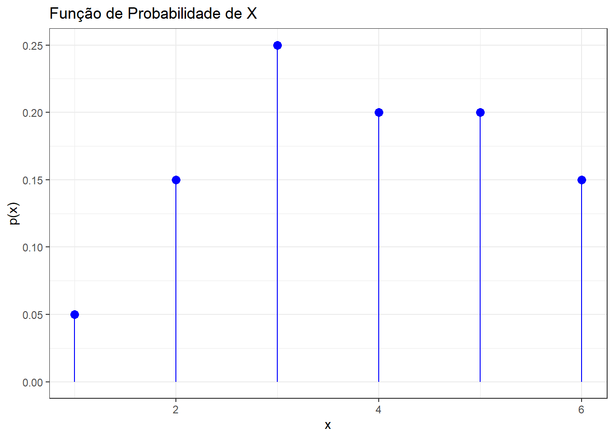

##| warning: false
## require é uma função "all in one", ou seja, realiza todo o processo de instalação e ativação do pacote
require(readxl) ## Leitura de bases de dados .xlsx
require(dplyr) ## Manipulação de bases de dados
require(ggplot2) ## Abordagem gráfica1 Revisão do R-Studio
1.1 Objetivos
Esta aula é uma revisão do R-Studio para relembrar tópicos importantes para o desenvolvimento das atividades da disciplina, como:
- Operadores relacionais e lógicos
- Estruturas condicionais
- Estruturas de repetição
- Criação de funções
- Manipulação de bases de dados
- Gráficos
1.2 Pacotes Necessários
Nesta primeira aula, abordaremos o uso dos seguintes pacotes:
1.3 Operadores Relacionais
Os operadores relacionais são utilizados para comparar duas estruturas e determinar a relação entre elas. O resultado dessas comparações é sempre um valor lógico TRUE ou FALSE, que são fundamentais para a construção de expressões condicionais, na filtragem e manipulação de dados e na estruturação de fluxos lógicos. Dessa forma, os principais operadores relacionais do R são:
\[ \begin{array}{ |c|c|c|c| } \hline \textbf{Operador} & \textbf{Descrição} & \textbf{Exemplo} & \textbf{Resultado} \\ \hline == & \textit{Igual a} & 5 == 5 & \texttt{TRUE} \\ != & \textit{Diferente de} & 5 != 3 & \texttt{TRUE} \\ < & \textit{Menor que} & 3 < 5 & \texttt{TRUE} \\ > & \textit{Maior que} & 3 > 5 & \texttt{FALSE} \\ \leq & \textit{Menor ou igual a} & 5 <= 5 & \texttt{TRUE} \\ \geq & \textit{Maior ou igual a} & 4 >= 5 & \texttt{FALSE} \\ \hline \end{array} \]
1.4 Operadores Lógicos
Os operadores lógicos são usados para combinar expressões booleanas (TRUE ou FALSE), de maneira que são fundamentais para a construção de expressões condicionais, filtragem de dados e controle do fluxo do programa. Basicamente, temos os seguintes operadores:
- & (conjunção): o equivalente da operação “e” na lógica matemática
- | (disjunção): o equivalente da operação “ou” na lógica matemática
Exemplos:
## F T
(5>10) & ("Thales"!="Tales") ## Leia como teste 1 e teste 2## F T
(5>10) | ("Thales"!="Tales") ## Leia como teste 1 ou teste 21.5 Estruturas Condicionais
As estruturas condicionais servem para controlar o fluxo de execução de um programa, permitindo que diferentes blocos de código sejam executados dependendo de condições específicas. Isso pode ser muito útil no desenvolvimento de códigos que precisam de condições para serem executados e também na manipulação de bases de dados. Basicamente, as estruturas condicionais do R se resumem à utilização dos comandos if, else ou ifelse.
1.5.1 Sintaxe
Um trecho básico de código condicional possui a seguinte estrutura:
##| output: false
x = sample(1)
## Condicional em torno do valor de x
if(x < 10){
print("É menor!") ## Trecho a ser executado caso o primeiro teste retorne TRUE
} else {
print("É maior!") ## Trecho a ser executado caso o primeiro teste retorne FALSE
}Podemos ler o trecho acima da seguinte maneira: se x for menor que 10, retorne um texto confirmando isso, caso contrário, retorne um texto dizendo que ele é maior. Caso seja necessário, é possível encadear condições para criar um fluxo mais complexo, como no exemplo abaixo.
##| output: false
x = sample(1)######
## Condicional em torno do valor de x
if(x < 10){
print("É menor que dez") ## Trecho a ser executado caso o primeiro teste retorne TRUE
} else if(x < 5){
print("É maior!") ## Trecho a ser executado caso o primeiro teste retorne FALSE e o segundo TRUE
} else if(x != 0){
print("É diferente de zero!") ## Trecho a ser executado caso o primeiro e o segundo teste retornem FALSE e o terceiro TRUE
}No caso acima, temos 3 testes condicionais encadeados e, assim como no caso anterior, apenas um dos trechos será executado.
PERGUNTA: o segundo teste tem a possibilidade de ser executado em algum momento? O trecho acima vai retornar algo por padrão?
1.5.2 Condicionais em Vetores
Se você estiver trabalhando com vetores, pode recorrer à utilização da função ifelse, que possui a seguinte sintaxe:
ifelse(condicao, valor_se_verdadeiro, valor_se_falso)Ela vai retornar uma lista de valores previamente selecionados, um para o caso positivo e outro para o negativo, de acordo com o teste aplicado em cada um dos itens da lista que foi passada como argumento.
Exemplo:
valores = c(3, 8, 2, 10)
resultado = ifelse(valores > 5, "Maior que 5", "Menor ou igual a 5")
resultado1.6 Estruturas de Repetição
As estruturas de repetição (ou loops) permitem executar um mesmo bloco de código várias vezes, seja um número fixo ou até que uma condição seja atendida. Elas são úteis para automatizar tarefas repetitivas, como iterar sobre vetores, processar grandes volumes de dados e aplicar funções a elementos de uma lista.
1.6.1 for
A estrutura for é útil para iterar sobre os elementos de uma lista, dataframe, vetor , matriz ou qualquer outro objeto. Isso significa que o laço for pode ser usado para executar um grupo de instruções repetidamente, dependendo do número de elementos no objeto. É um laço controlado por input, ou seja, você deve estabelecer os parâmetros. Neste laço, a condição de teste é testada primeiro e, em seguida, o corpo do laço é executado. Segue um exemplo de sua estrutura:
for (variavel in sequencia) {
## Código a ser repetido
}Agora, vamos observar um exemplo prático onde iteramos sobre uma lista de valores para retornar todos os valores inteiros de 1 a 5.
for (i in 1:5) {
print(i)
}1.6.2 while
O while executa um trecho de código enquanto uma condição for verdadeira. Por conta disso, ele é útil quando não sabemos o número exato de repetições. A sua sintaxe é:
while (condicao) {
## Código a ser repetido
}Abaixo, temos um exemplo onde o código será executado até o valor de x ser menor ou igual a 5, de modo que ele verifica essa condição toda vez antes de executar o trecho.
x = 1
while (x <= 5) {
print(x)
x = x + 1 ## Atualiza x para evitar loop infinito
}1.6.3 apply
As funções da família apply() são alternativas mais eficientes para loops, especialmente ao trabalhar com data frames e matrizes. A função apply tem basicamente a seguinte sintaxe:
apply(x="dados",MARGIN = "1 se linha, 2 se coluna ou c(1,2) para ambos", FUN = função)Exemplo:
matriz = matrix(1:9, nrow = 3)
apply(matriz, 1, sum) ## Soma de cada linha (argumento 1)1.7 Criação de Funções
As funções no R são blocos reutilizáveis de código que realizam tarefas específicas. Elas ajudam a organizar, modularizar e reutilizar código, tornando os scripts mais eficientes e fáceis de entender. Basicamente, a sintaxe para a criação de uma função no R é a seguinte:
nome_da_funcao <- function(argumento1, argumento2, ...) {
## Bloco de código que vai depender dos argumentos da função
return(valor_de_saida)
}Vamos fazer um exemplo envolvendo a sequência de fibonacci, que consiste em uma sequência numérica na qual cada termo é a soma dos dois termos anteriores. Dessa forma, ela começa com 0 e 1 e segue assim indefinidamente. Vamos criar uma função no R para retornar os n primeiros valores desta sequência.
fibonacci <- function(n) {
if (n == 1)
return(0)
else if (n == 2)
return(c(0,1))
else{
fib <- numeric(n)
fib[1] <- 0
fib[2] <- 1
for (i in 3:(n)) {
fib[i] <- fib[i-1] + fib[i-2]
}
}
return(fib)
}
## Testando a função para alguns valores:
fibonacci(15)1.7.0.1 Exercício
Crie uma função para retornar no fatorial de um número n, isto é, n!. Lembre-se que o fatorial de um número n é dado por
\[ n! = \begin{cases} 1, & \text{se } n = 0 \\ n \times (n-1) \times (n-2) \times \cdots \times 1, & \text{se } n \ge 1 \end{cases} \]
Para conferir se o seu resultado deu certo, utilize a função factorial do R.
1.8 Manipulação de Bases de Dados
Manipular bases é uma das principais e mais demoradas terefas do processo de análise de dados. Usualmente, os estatísticos e analistas de dados partem de uma base “crua” e a transformam até obter uma base de dados analítica, que, a menos de transformações simples, está preparada para gerar tabelas e gráficos e aplicação de modelos. Dessa forma, vamos utilizar o pacote dplyr para realizar as manipulações necessárias.
1.8.1 Motivação Prática
Utilizaremos, como exemplo, os dados coletados por alunas do curso de pós-graduação em nutrição da UFF com informações sobre 2210 pessoas que responderam um questionário online no ano de 2022. O estudo tem por objetivo avaliar a alteração alimentar dos respondentes com respeito à pandemia. Os dados estão no arquivo Dados.xlsx e as variáveis coletadas foram:
- Gênero: Feminino, Masculino, Outro e Prefiro não Responder;
- Idade, em anos;
- Região: Norte, Nordeste, Centro-Oeste, Sul e Sudeste;
- Isolamento durante a pandemia: Sim e Não;
- Renda Familiar: Até R$ 1254,00, entre R$1255,00 e R$8640,00 e mais que R$8640,00;
- Alteração Nutricional durante a Pandemia: Sim e Não;
- Peso, em quilos;
- Altura, em metros.
Coloque o arquivo no mesmo diretório do seu script R.
Para lermos o arquivo, vamos utilizar o pacote readxl que permite a leitura de arquivos com a extensão .xlsx (planilhas Excel). Dentro dele, existe a função read_xlsx().
## Lendo a base de dados no formato .xlsx
Dados = read_xlsx(path = "Dados.xlsx")1.8.2 Operador pipe |>
O operador |> (pipe) foi uma das grandes revoluções recentes do R, tornando a escrita e leitura de códigos mais intuitiva e compreensível. A ideia dele é bem simples: usar o valor resultante da expressão do lado esquerdo como argumento da função do lado direito.
Para que seja feita a sequência de manipulações nas bases de dados, utilizaremos o pipe para organizar as operações. OBSERVAÇÃO: o pipe também pode ser escrito como %>% (versão do pacote tidyverse).
1.8.3 Pacote Dplyr
O dplyr é o pacote mais útil para realizar transformação de dados, aliando simplicidade e eficiência de uma forma elegante. Os scripts em R que fazem uso inteligentes das funções do dplyr e as facilidades do operador pipe tendem a ficar mais legíveis e organizados, sem perder velocidade de execução.
Nas próximas seções, veremos alguns exemplos de funções do dplyr. Ao longo do treinamento, mais funções desse pacote serão exploradas.
1.8.4 Função rename
Esta função renomeia nomes de colunas (variáveis). Para usar esta função basta recorrer à sintaxe
rename(Nome_novo = Nome_antigo)Exemplo
## Alterando o nome da variável Isolamento para Isolamento_Social
Dados1 = Dados |> rename(Isolamento_Social=Isolamento)1.8.5 Função select
Esta função seleciona colunas (variáveis). Para usar esta função, basta recorrer à sintaxe
select(nomes das variáveis separadas por ",")É possível fazer essa seleção utilizando nomes, índices, intervalos de variáveis ou utilizar as funções starts_with(x), ends_with(x), contains(x), matches(x), one_of(x) para selecionar as variáveis.
## Selecionando as variáveis Genero, Idade e Alteração_Pandemia
Dados2 = Dados |> select(Genero,Idade,Alteracao_Pandemia)
## Selecionando as variáveis a partir de Genero até Alteracao_Pandemia
Dados3 = Dados |> select(Genero:Alteracao_Pandemia)
## Selecionando todas as variáveis exceto Idade
Dados4 = Dados |> select(-Idade)
## Selecionando as variáveis que começam com I
Dados5 = Dados |> select(starts_with("I"))1.8.6 Função mutate
Função que permite criar/modificar variáveis de acordo com variáveis existentes. Para usar esta variável, basta recorrer à sintaxe
mutate(nova_variavel = transformação)Exemplo
## Criando a variável IMC
Dados10 = Dados |> mutate(IMC=Peso/(Altura^2))1.8.7 Função summarise
A função summarise é usada para calcular estatísticas de um conjunto de dados. Veja um exemplo da sua utilização na variável altura
## Estatísticas descritivas da variável altura
Dados11 = Dados |> summarise(Media = mean(Altura),
Mediana = median(Altura),
DP = sd(Altura))1.8.8 Função group_by
A função group_by potencializa o uso da função summarise quando você quer estratificar as análises descritivas por uma ou mais variáveis. Exemplos
## Estatísticas descritivas da variável altura, por região.
Dados12 = Dados |> group_by(Regiao)|>
summarise(Media = mean(Altura),
Mediana = median(Altura),
DP = sd(Altura))
## Estatísticas descritivas da variável altura, por região e gênero.
Dados13 = Dados |> group_by(Genero,Regiao)|>
summarise(Media = mean(Altura),
Mediana = median(Altura),
DP = sd(Altura))1.8.9 Exercícios
1.8.9.1 Exercício 1
Suponha seja de interesse a construção de uma base de dados em que sejam estudadas apenas as mulheres com mais de 30 anos. Adicionalmente, seja necessário o cálculo do IMC delas. Para fechar, é de interesse o estudo apenas das variáveis Alteracao_Pandemia, IMC e Renda_familiar.
1.8.9.2 Exercício 2
Na base manipulada no item anterior, obtenha a média, desvio padrão e mediana do IMC estratificando por Renda_familiar e Alteracao_Pandemia.
1.9 Gráficos com ggplot2
A construção de gráficos no R foi revolucionada com a criação do pacote ggplot2, fruto da tese de doutorado do Hadley Wickham, em 2005. Essa revolução teve base na filosofia que Hadley adotou para responder a pergunta “O que é um gráfico estatístico?”.
Em 2005, o estatístico norte-americano Leland Wilkinson publicou o livro The Grammar of graphics (A gramática dos gráficos, em português), uma fonte de princípios fundamentais para a construção de gráficos estatísticos. No livro, ele defende que um gráfico é o mapeamento dos dados em atributos estéticos (posição, cor, forma, tamanho) de formas geométricas (pontos, linhas, barras, caixas).
A partir dessa definição, Hadley escreveu A Layered Grammar of Graphics (Uma gramática em camada dos gráficos), acrescentando que os elementos de um gráfico (dados, sistema de coordenadas, rótulos, anotações, entre outros) são as suas camadas e que a construção de um gráfico se dá pela sobreposição dessas camadas. Essa é a essência do ggplot2: construir um gráfico camada por camada.
Além de uma filosofia bem fundamentada, o ggplot2 ainda traz outras vantagens em relação aos gráficos do R base:
- Gráficos naturalmente mais bonitos;
- Fácil personalização (mais simples deixar o gráfico do jeito que você quer);
- A estrutura padronizada das funções deixa o aprendizado mais intuitivo;
- A diferença no código entre tipos diferentes de gráficos é muito pequena.
Desde a sua criação em 2005, o pacote ggplot2 vem recebendo diversas contribuições do próprio pacote e de outros pacotes para que a experiência gráfica no R seja cada vez mais completa. Para relembrar, a função base a ser utilizada se chama ggplot (sem o 2). O comando básico a partir do qual vamos gerar praticamente todos os gráficos é
ggplot(data = "insira os seus dados", mapping = aes("argumentos gráficos"))O argumento mapping = aes(.) tem a função de descrever como as variáveis dos seus dados serão usadas para a representação visual. Dentro do aes(), pode ser útil estabelecer os seguintes:
- x: A variável que ficará no eixo x do gráfico
- y: A variável que ficará no eixo y do gráfico
- fill: A variável que preencherá estruturas gráficas. Muito útil em dados qualitativos, para fazer gráficos de barras empilhadas.
- color: A variável que será destacada por cores.
- label: A variável que será “escrita” no gráfico.
O argumento mapping = aes(.) não aparece somente nessa função base. Ele também aparece em outros comandos do ggplot2. A dica é: sempre que você precisar associar alguma variável do seus dados para alguma representação gráfica, esse argumento deve ser utilizado. As camadas vão sendo colocadas nessa função base simplesmente utilizando o comando +. Vamos relembrar como fazer os gráficos histograma, da função de probabilidade e da função densidade de probabilidade.
1.9.1 Histograma
Um histograma apresenta os dados como um gráfico de barras verticais. Cada barra representa uma classe de valores da distribuição de frequência. A variável numérica é representada ao longo do eixo horizontal e o eixo vertical representa a frequência absoluta, relativa ou a densidade de valores por intervalo de classe. Nunca há lacunas entre as barras adjacentes em um histograma.
No ggplot2 o histograma é construído com a função geom_histogram(). Seguem os códigos para a construção de um histograma para a variável idade:
## Gráfico histograma
ggplot(data = Dados, mapping = aes(x = Idade)) + geom_histogram(fill="lightblue" ) +
theme_bw() +
xlab("Idade") +
ylab("Frequencia Absoluta")O default do histograma do geom_histogram coloca muitas barras. Em uma situação onde você nao tem conhecimento do número de barras do seu gráfico, podemos utilizar a regra de Sturges, em que o número k de barras é dado por
\[ k = \left[1 + 3.322 \log_{10} n \right] \]
Para alterar o número de barras segundo a regra de Sturges, utilize o argumento bin
## Gráfico histograma
ggplot(data = Dados, mapping = aes(x = Idade)) +
geom_histogram(bins= nclass.Sturges(Dados$Idade),
fill="lightblue" ) +
xlab("Idade") +
ylab("Frequencia Absoluta")+
theme_bw() Para fazer o histograma considerando a frequência relativa, execute o seguinte código (atente-se para o y dentro do aes)
## Gráfico histograma
ggplot(data = Dados, mapping = aes(x = Idade, y = ..count../sum(..count..))) +
geom_histogram(bins= nclass.Sturges(Dados$Idade),
fill="lightblue" ) +
theme_bw() +
xlab("Idade") +
ylab("Frequência relativa")Para fazer o histograma considerando a densidade, execute o seguinte código (atente-se para o y dentro do aes)
## Gráfico histograma
ggplot(data = Dados, mapping = aes(x = Idade, y= ..density..)) +
geom_histogram(bins= nclass.Sturges(Dados$Idade),
fill="lightblue" ) +
theme_bw() +
xlab("Idade") +
ylab("Densidade")Se a variável aleatória é discreta, opte por histogramas com a frequência absoluta ou relativa. Se a variável aleatória é contínua, opte pelo histograma com a densidade.
1.9.1.1 Exercício
Faça o histograma da densidade para a variável peso com a regra de sturges.
1.9.2 Gráfico da Função de Probabilidade
Para uma variável aleatória discreta X, a função de probabilidade (ou função massa de probabilidade, FMP) é uma função que associa a cada valor possível de X a probabilidade de sua ocorrência. Considere, por exemplo, que uma variável aleatória discreta X que tem a seguinte função de probabilidade:
| \(x\) | 1 | 2 | 3 | 4 | 5 | 6 |
|---|---|---|---|---|---|---|
| \(p(x)\) | 0,05 | 0,15 | 0,25 | 0,2 | 0,2 | 0,15 |
No R, podemos retratar essa função de probabilidade graficamente com os seguintes comandos
###### Criando os dados
PMF = data.frame(x = 1:6,
prob = c(0.05,0.15,0.25,0.2,0.2,0.15))
###### Gráfico de pontos com segmentos
ggplot(PMF, aes(x = x, y = prob)) +
geom_point(color = "blue", size = 3) +
geom_segment(aes(xend = x, yend = 0), color = "blue") +
labs(title = "Função de Probabilidade de X",
x = "x",
y = "p(x)")+
theme_bw() 
1.9.2.1 Exercício
Acrescente, no gráfico acima uma linha tracejada vermelha indicando a média dessa variável aleatória. Dica: use o comando geom_vline.
1.9.3 Gráfico da Função Densidade de Probabilidade
A função densidade de probabilidade (f.d.p.) é uma função matemática que descreve a distribuição de probabilidade de uma variável aleatória contínua. Ela indica a probabilidade relativa de a variável assumir determinado valor, mas não a probabilidade exata, pois em variáveis contínuas a probabilidade de um único ponto é zero. A área sob a curva da f.d.p. em um intervalo específico representa a probabilidade de a variável assumir um valor dentro desse intervalo. Para a ilustração no R, considere uma variável aleatória contínua x com a seguinte função densidade de probabilidade
\[ f(x) = \begin{cases} 30x(1-x)^4 & \text{para } 0 \le x \le 1, \\ 0 & \text{caso contrário.} \end{cases} \]
Seguem os comandos
###### A função densidade de probabilidade
densidade <- function(x)
return(30*x*(1-x)^4)
###### Criando o data.frame
x=seq(0,1,0.01)
fdp <- data.frame(x=x,
y=densidade(x))
###### Gráfico de linha
ggplot(fdp, aes(x = x, y = y)) +
geom_line(color = "blue", size = 1) +
labs(title = "Função Densidade de Probabilidade",
x = "x", y = "f(x)") +
theme_bw()1.9.3.1 Exercício
A média da distribuição acima é 2/7. Acrescente uma linha vertical com o valor dessa média.